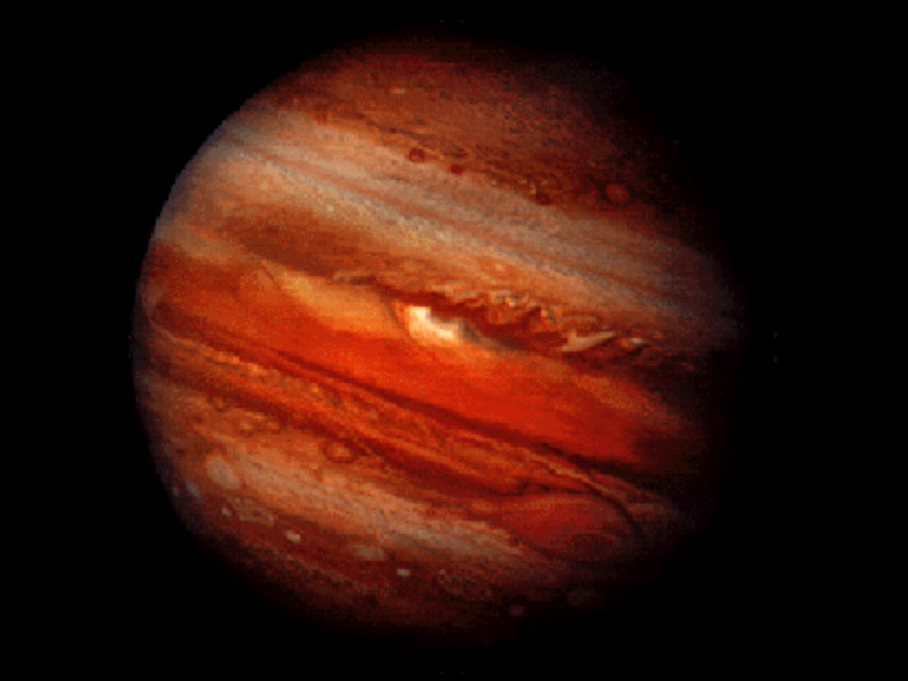
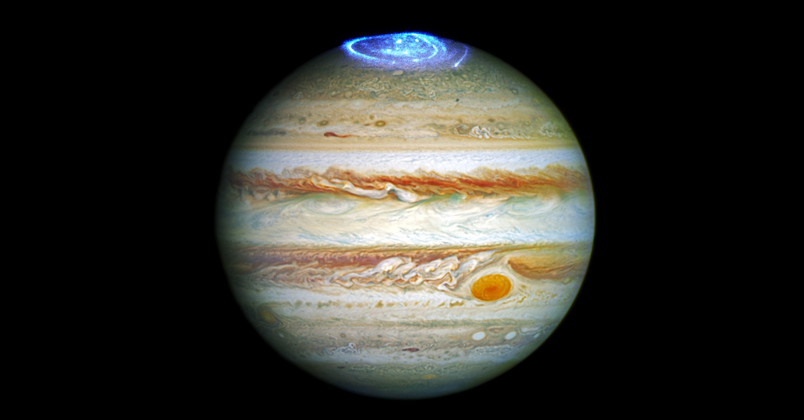

Sabado 24 de agosto de 2018
Es la primera vez que un planeta interestelar es descubierto debido a sus emisiones de radio. Esto descubre un nuevo y prometedor método para el descubrimiento de exoplanetas.
Los astrónomos descubrieron un enorme planeta interestelar que tiene 12 veces la masa de Júpiter y un campo magnético sin igual, según una nueva investigación publicada en el Astrophysical Journal. Esta es la primera vez que se descubre un planeta interestelar a partir de sus emisiones de radio, lo que abre la puerta a un método completamente nuevo de descubrimiento de exoplanetas.
Los planetas interestelares son cuerpos celestes que no orbitan alrededor de una estrella, sino alrededor del centro galáctico en el espacio interestelar. Hasta la fecha, sólo se han descubierto un puñado de planetas interestelares; sien embargo, algunos astrónomos creen que puede haber decenas de miles de planetas interestelares por cada estrella en la galaxia.
El planeta interestelar SIMP J01365663+0933473 se detectó por primera vez en 2016, pero originalmente lo confundieron con una enana marrón. Estas llamadas "estrellas fallidas" son densas colecciones de gas demasiado masivas para ser consideradas un planeta, pero no lo suficientemente masivas como para mantener las reacciones nucleares continuas que le dan a otras estrellas su energía.
SIMP formaba parte de un grupo de cinco enanas marrones que los astrónomos de la Very Large Array estudiaban para aprender más sobre cómo estas aspirantes a estrellas producen semejantes emisiones de radio. Sin embargo, cuando los datos observacionales originales fueron revisados por un equipo independiente de científicos, descubrieron que SIMP probablemente era un planeta de gas masivo, y no una estrella.
Tratar de determinar cuándo una enorme y densa bola de gas debería ser considerada una enana marrón en lugar de un planeta es como intentar determinar cuántos granos de arena constituyen una pila de arena frente a un montón de arena. El límite es un continuo tema de debate entre los astrónomos, pero la regla general es que se denomina planeta a lo que esté debajo de 13 veces la masa de Júpiter, lo que se conoce como el "límite de combustión de deuterio" porque ése es aproximadamente el punto cuando se detiene la fusión del deuterio.
SIMP es 12.7 veces la masa de Júpiter, lo cual lo coloca justo del lado de lo que se considera un planeta.
Ubicado a sólo 20 años luz de distancia (aproximadamente cinco veces la distancia de nuestro vecino estelar más cercano, Alpha Centauri), se estima que SIMP tiene aproximadamente 200 millones de años y un campo magnético 4 millones de veces más fuerte que el de la Tierra. Este fuerte campo magnético produce auroras increíbles en el planeta, muy parecidas a las auroras que se ven en los polos de la Tierra, pero a una escala mucho mayor. Estas grandes auroras producen fuertes emisiones de radio, lo que condujo al descubrimiento de SIMP en primer lugar.
Sin embargo, la presencia de estas auroras es algo así como un misterio. En la Tierra, las auroras se producen cuando nuestro campo magnético interactúa con el viento solar. Mas, los planetas interestelares no orbitan alrededor de una estrella, y por lo tanto no están expuestos al viento solar. Una posible explicación para las auroras es que sean causadas por alguna luna que orbite alrededor del planeta interestelar, al igual que Io crea destellos aurorales en Júpiter.
Es importante destacar que el descubrimiento de SIMP marca la primera vez que se descubre un planeta interestelar con base en sus emisiones de radio y la primera vez que se ha medido el campo magnético de un planeta interestelar. Según los astrónomos involucrados en la investigación, esto abre la puerta a un nuevo y prometedor método para detectar exoplanetas y planetas interestelares.
Publicado originalmente en VICE.com